项目管理
添加项目类型
1.1【后台】选择左侧【项目管理-项目类型管理】菜单，【项目类型列表】中已有常用类型，如需要添加则在【添加项目类型】添加类型，填写完成点击【添加】。
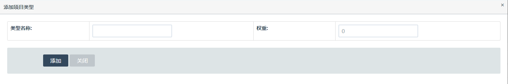
添加项目
1.1【后台】选择左侧【项目管理-项目列表】菜单，【添加项目】添加项目信息，填写完成点击【添加】。
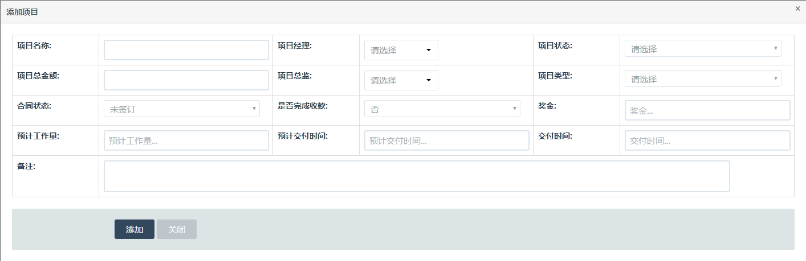
任务类型管理
1.1【后台】选择左侧【项目管理-任务类型管理】菜单，【任务类型列表】中已有常用类型，如需要添加则在【添加任务类型】中添加类型信息，填写完成点击【添加】。
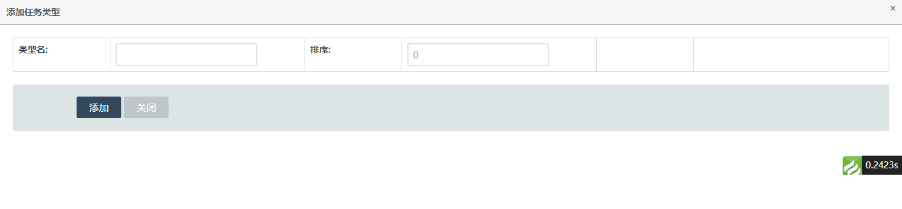
添加任务
1.1【移动端】选择【发起-添加任务】，填写完成点击【提交】。
 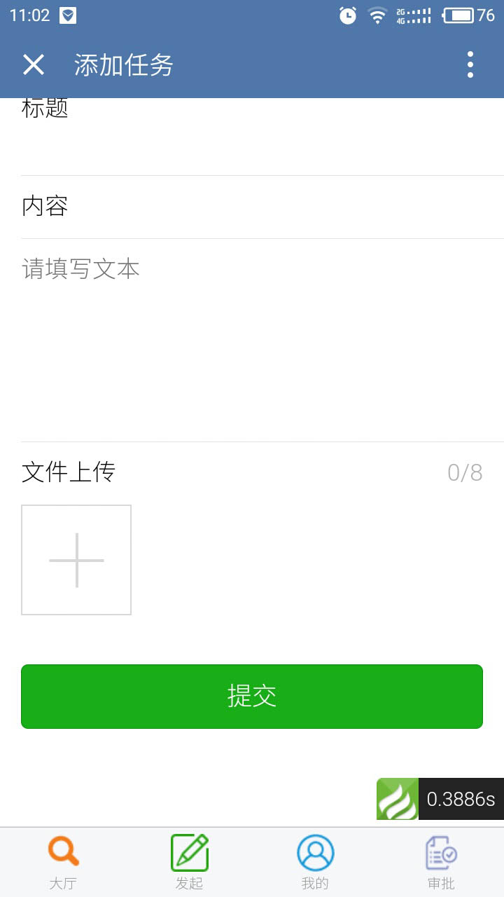
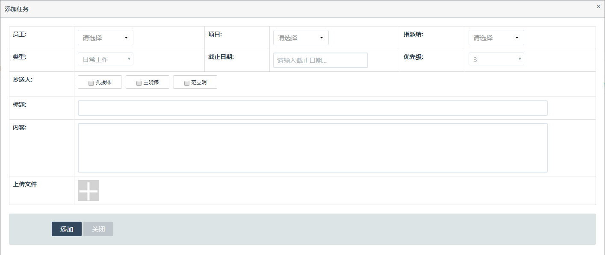
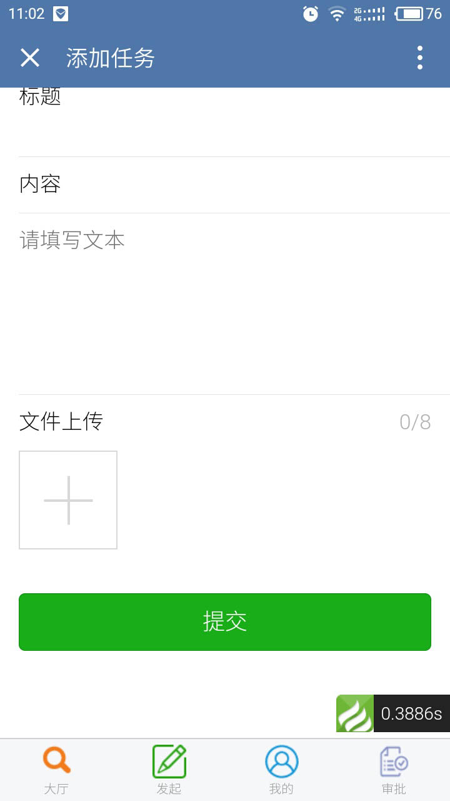
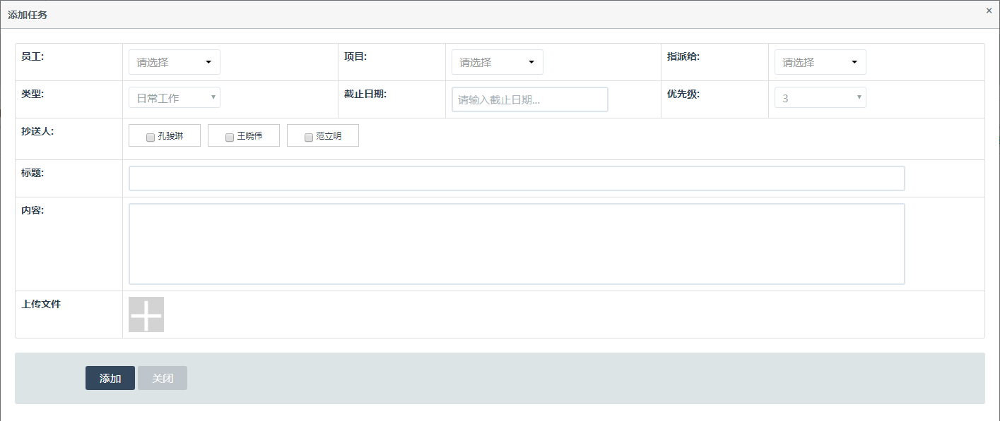
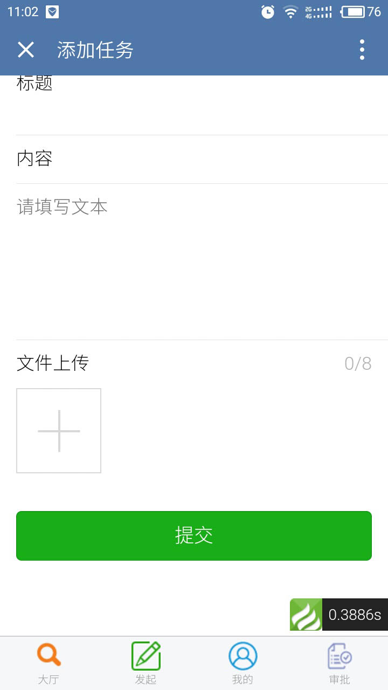
任务导出
1.1【后台】选择左侧【项目管理-任务管理】菜单，【数据导出】导出当前列表的所有内容，可选择发起者、项目、类型、状态及任务ID进行数据导出。
 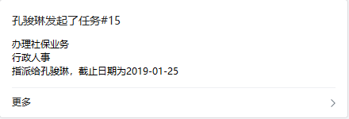
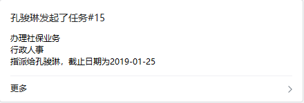
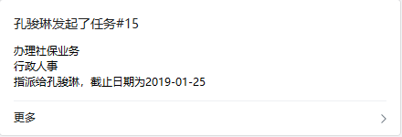
任务明细--同大厅项目任务（项目任务还没写）
1.1【移动端】选择【大厅-任务明细】，进入任务明细列表，点击任务进入详情页。
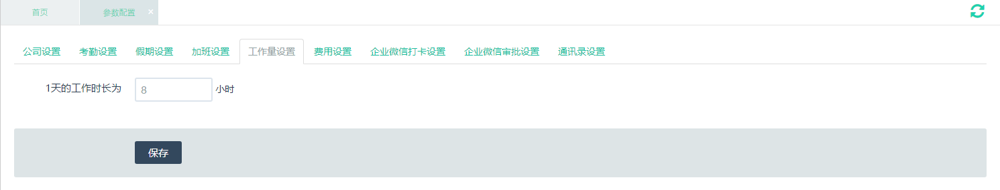1.2【移动端】添加任务后，被指派人会收到系统推送消息。打开查
任务操作
1.1【移动端】选择【大厅-任务明细】任务详情页，“详情”该任务的详细内容。

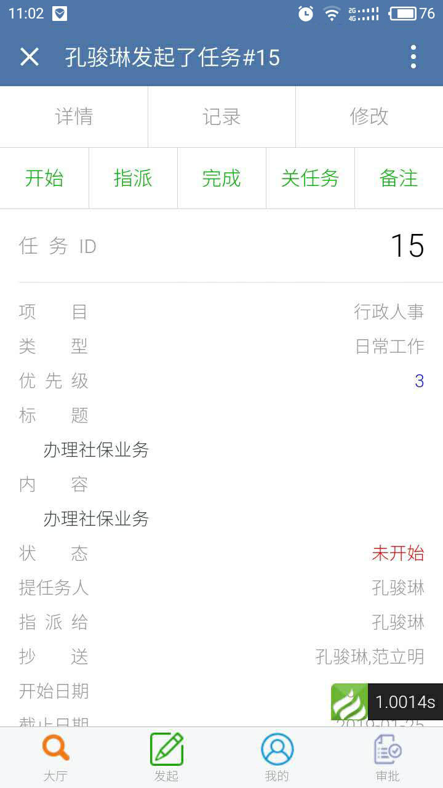
1.2【移动端】选择【大厅-任务明细】任务详情页，“记录”该任务的历史记录。
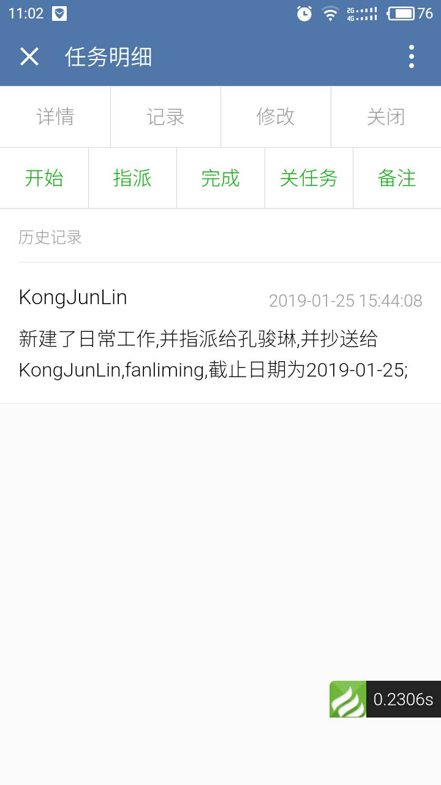
1.3【移动端】选择【大厅-任务明细】任务详情页，“修改”修改该任务的详细内容，填写完点击【提交】。
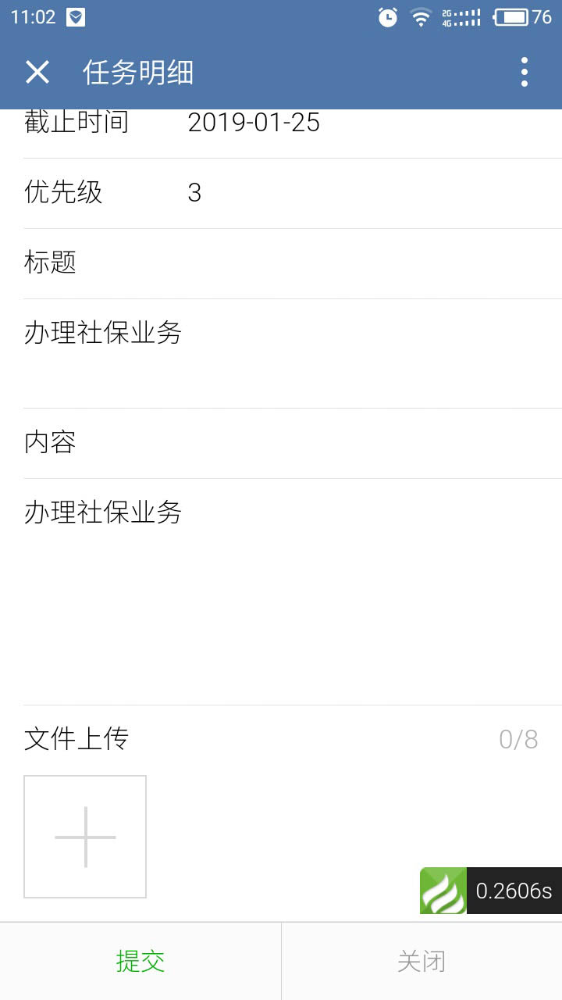
1.4【移动端】选择【大厅-任务明细】任务详情页，“关闭”关闭该内容详情页，跳转到列表页。
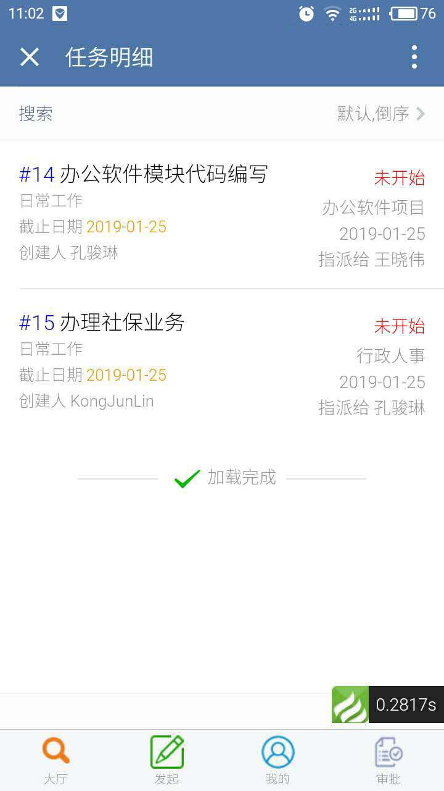
1.5【移动端】选择【大厅-任务明细】任务详情页，“开始”开始做任务，填写完成点击【保存】。
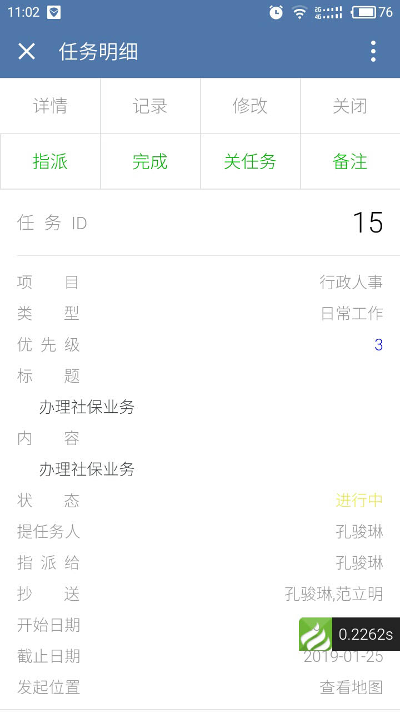
1.6【移动端】选择【大厅-任务明细】任务详情页，“指派”该任务的指派信息，填写完成点击【保存】。
1.7【移动端】选择【大厅-任务明细】任务详情页，“完成”完成该任务，填写完成点击【保存】。
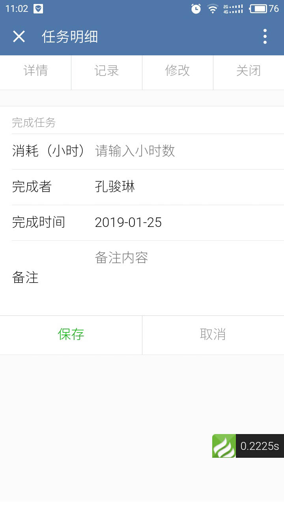
1.8【移动端】选择【大厅-任务明细】任务详情页，“备注”该任务的备注信息，填写完成点击【保存】。
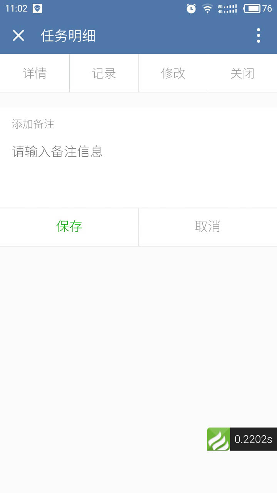
1.9【移动端】选择【大厅-任务明细】任务详情页，“关任务”任务完成后，点击“关任务”，该任务才算完成。
1.10【移动端】选择【大厅-任务明细】任务详情页，“重启”任务状态为已完成，需要重新开始做改任务，点击“重启”。
任务状态
1.1【移动端】选择【大厅-任务明细】列表页，根据任务的完成情况不同，会显示不同的状态。
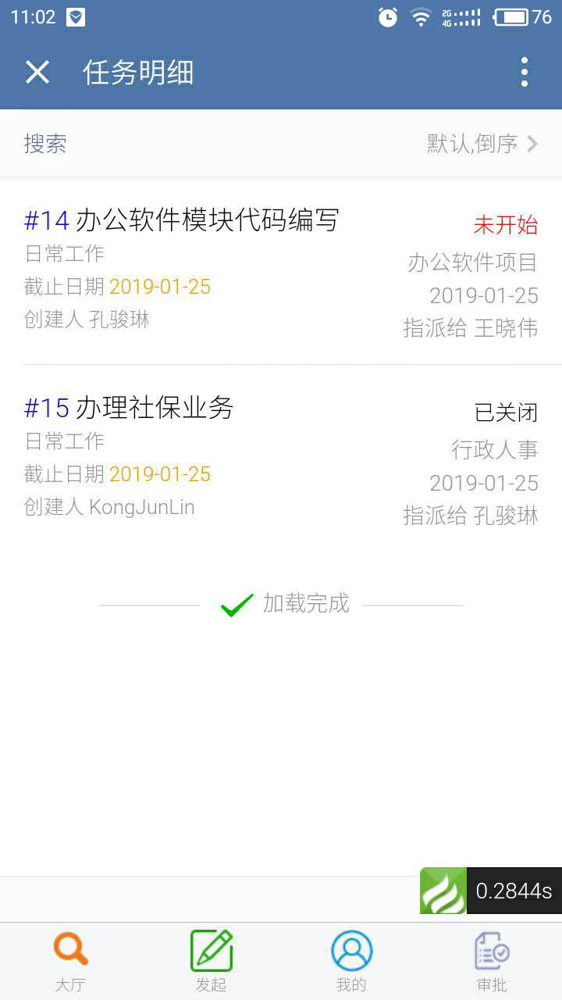
项目查询
1.1【移动端】选择【大厅-项目查询】